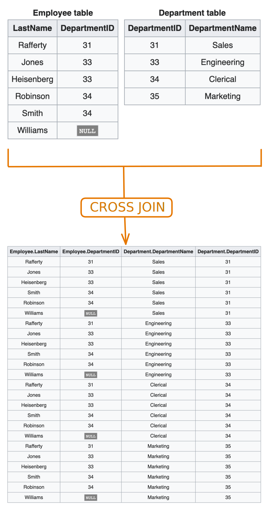
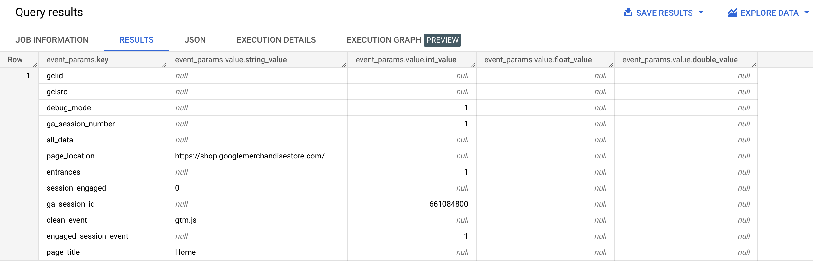
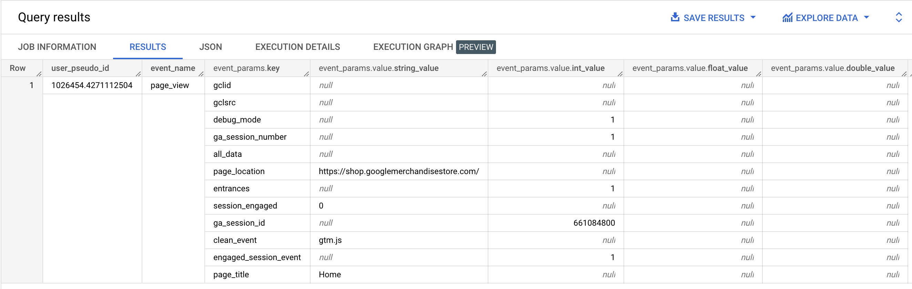
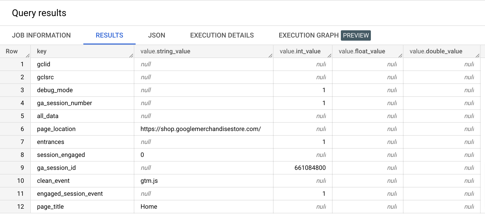
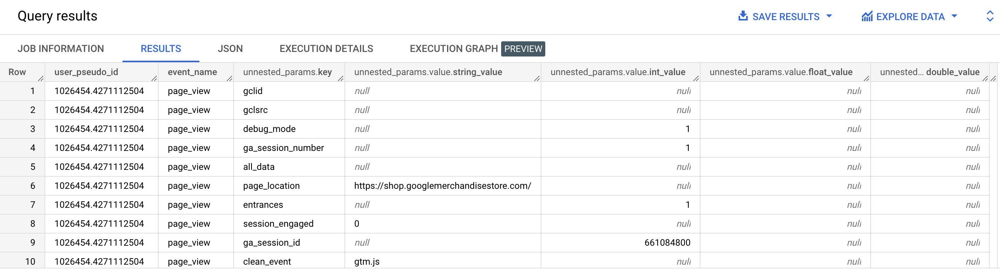
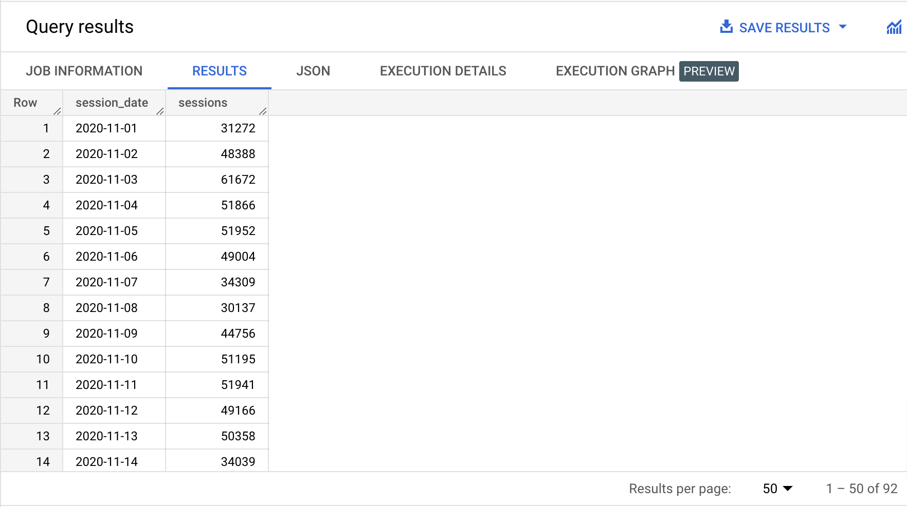
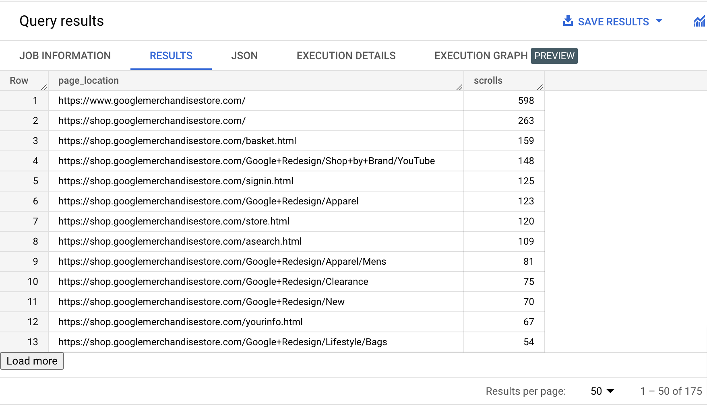
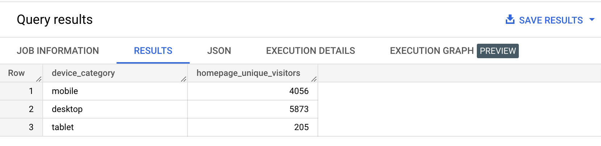

A JOIN is an operation that combines columns from one table with columns from another table, to form a new table with the combined columns. Here's the full view of the SQL order of execution, including JOIN.
| Step | Clause | Description |
|---|---|---|
| 1 | FROM | Chooses the data to get the data from. |
| 2 | JOIN | Joins tables. |
| 3 | WHERE | Filters the data. |
| 4 | GROUP BY | Aggregates the data. |
| 5 | HAVING | Filters the aggregated data. |
| 6 | SELECT | Returns the final data. |
| 7 | ORDER BY | Sorts the final data. |
| 8 | LIMIT | Limits the number of rows displayed. |
A CROSS JOIN is specific type of JOIN that combines every rows from one table with every rows from another table, to form a new table. In maths, this is called a cartesian product.
To illustrate this, here's an example adapted from the Wikipedia page:

Now is your turn to cross the Rubicon! Observe carefully the results of the following queries.
Type the query below in the BigQuery console and run it. Don't copy paste. 😉
WITH customer_count AS
( SELECT COUNT(*) AS c_count
FROM
( SELECT DISTINCT user_id
FROM bigquery-public-data.thelook_ecommerce.orders
)
),
user_count AS
( SELECT COUNT(*) AS u_count
FROM bigquery-public-data.thelook_ecommerce.users
)
SELECT *
FROM customer_count
CROSS JOIN user_count;
Example results:
| c_count | u_count |
|---|---|
| 79992 | 100000 |
Type the query below in the BigQuery console and run it. Don't copy paste. 😉
WITH customer_count AS
( SELECT COUNT(*) AS c_count
FROM
( SELECT DISTINCT user_id
FROM bigquery-public-data.thelook_ecommerce.orders
)
),
user_count AS
( SELECT COUNT(*) AS u_count
FROM bigquery-public-data.thelook_ecommerce.users
)
SELECT customer_count.c_count,
user_count.u_count,
customer_count.c_count / user_count.u_count * 100 AS customer_percentage
FROM customer_count
CROSS JOIN user_count;
Example results:
| c_count | u_count | customer_percentage |
|---|---|---|
| 79992 | 100000 | 79.99199999999999 |
There's a shorthand syntax for cross joins. Instead of ... FROM table_1 CROSS JOIN table_2, you could also write ... FROM table_1, table_2. Following our style guide, we prefer to always write them in full form.
When you have in your table, a column of the ARRAY type, you can "flatten" these arrays fields by using UNNEST, and cross joining the result with the origin table. This is technique that's indispensable when working with Google Analytics 4 BigQuery sample dataset, as it contains a lot of arrays, the main ones being the event_params and user_properties columns.
Observe carefully the results of the following queries.
Type the query below in the BigQuery console and run it. Don't copy paste. 😉
SELECT event_params
FROM bigquery-public-data.ga4_obfuscated_sample_ecommerce.events_20210131
WHERE event_date = '20210131'
AND event_timestamp = 1612069510766593
AND event_name = 'page_view'
AND user_pseudo_id = '1026454.4271112504';
Example results:

Type the query below in the BigQuery console and run it. Don't copy paste. 😉
SELECT user_pseudo_id, event_name, event_params
FROM bigquery-public-data.ga4_obfuscated_sample_ecommerce.events_20210131
WHERE event_date = '20210131'
AND event_timestamp = 1612069510766593
AND event_name = 'page_view'
AND user_pseudo_id = '1026454.4271112504';
Example results:

Type the query below in the BigQuery console and run it. Don't copy paste. 😉
WITH event_params AS
(
SELECT event_params
FROM bigquery-public-data.ga4_obfuscated_sample_ecommerce.events_20210131
WHERE event_date = '20210131'
AND event_timestamp = 1612069510766593
AND event_name = 'page_view'
AND user_pseudo_id = '1026454.4271112504'
)
SELECT *
FROM UNNEST((SELECT * FROM event_params));
Example results:

Type the query below in the BigQuery console and run it. Don't copy paste. 😉
SELECT user_pseudo_id, event_name, unnested_params
FROM bigquery-public-data.ga4_obfuscated_sample_ecommerce.events_20210131
CROSS JOIN UNNEST(event_params) AS unnested_params
WHERE event_date = '20210131'
AND event_timestamp = 1612069510766593
AND event_name = 'page_view'
AND user_pseudo_id = '1026454.4271112504';
Example results:

{% include practice_problems_intructions.html %}bigquery-public-data.ga4_obfuscated_sample_ecommerce.events_*
| unique_engaged_users |
|---|
| 86962 |
SELECT COUNT(DISTINCT user_pseudo_id) AS unique_engaged_users
FROM `bigquery-public-data.ga4_obfuscated_sample_ecommerce.events_*`
CROSS JOIN UNNEST(event_params) AS unnested_params
WHERE (_table_suffix BETWEEN '20210101' AND '20210131')
AND (unnested_params.key = 'engagement_time_msec')
AND (unnested_params.value.int_value > 0);
bigquery-public-data.ga4_obfuscated_sample_ecommerce.events_*

SELECT PARSE_DATE('%Y%m%d', _table_suffix) AS session_date,
COUNT(CONCAT(user_pseudo_id, '.', unnested_params.value.int_value)) AS sessions
FROM `bigquery-public-data.ga4_obfuscated_sample_ecommerce.events_*`
CROSS JOIN UNNEST(event_params) AS unnested_params
WHERE unnested_params.key = 'ga_session_id'
GROUP BY session_date
ORDER BY session_date ASC;
bigquery-public-data.ga4_obfuscated_sample_ecommerce.events_20210131

SELECT unnested_params.value.string_value AS page_location,
COUNT(*) AS scrolls
FROM bigquery-public-data.ga4_obfuscated_sample_ecommerce.events_20210131
CROSS JOIN UNNEST(event_params) AS unnested_params
WHERE event_name = 'scroll'
AND unnested_params.key = 'page_location'
GROUP BY page_location
ORDER BY scrolls DESC;
bigquery-public-data.ga4_obfuscated_sample_ecommerce.events_*

SELECT device.category AS device_category,
COUNT(DISTINCT user_pseudo_id) AS homepage_unique_visitors
FROM `bigquery-public-data.ga4_obfuscated_sample_ecommerce.events_*`
CROSS JOIN UNNEST(event_params) AS unnested_params
WHERE event_name = 'page_view'
AND (_table_suffix BETWEEN '20210101' AND '20210131')
AND (unnested_params.key = 'page_location')
AND (unnested_params.value.string_value = 'https://googlemerchandisestore.com/')
GROUP BY device_category;